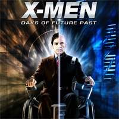

Últimas Noticias
Como entrenar a tu Dragón supera 3 millones de de vistas en México
Por segunda semana consecutiva, “Cómo entrenar a tu dragón 2” lideró la taquilla en cines mexicanos, al reportar un millón 348 mil 368 asistentes e ingresos de 65 millones 174 mil 784 pesos. En sus dos semanas cinematográficas, la cinta ya alcanza los 3 millones 514 mil 223 boletos vendidos.
Guionista de Al filo del mañana trabajará en live-action de Akira
Quizás esa sea la razón por la que Warner Bros. decidió contratar nuevamente al guionista Dante Harper, pero esta vez para reactivar un proyecto que ha sufrido una gran cantidad de retrasos y cancelaciones: Akira, de Katsuhiro Otomo.

Habrá corte de director en X-Men: Días del Futuro Pasado
La productora de X-Men: Días del futuro pasado, Lauren Donner Shuler, ha asegurado que veremos a finales de año el montaje del director Bryan Singer de la última película del grupo de mutantes de Marvel. La noticia la ha dado al responder a un comentario en Twitter de una aficionada de la franquicia.
Maléfica, la cinta más taquillera live actiion de Disney
La cinta protagonizada por Angelina Jolie, Maléfica, rebasó este fin de semana los 500 mdd en taquilla, con lo cual se coloca como el live action más exitoso de Disney, por encima de Oz the Great and Powerful, que ostentaba el título con 493.3 mdd recaudados en todo el mundo.
Bajo la misma estrella, un romance que triunfa en taquilla
La combinación de bestseller más romanticismo ha vuelto a marcarse un tanto en el cine. La adaptación de Bajo la misma estrella, escrita por John Green y publicada hace 2 años y medio, ha sido la película más taquillera en los cines españoles el pasado fin de semana. Según datos de Rentrak Spain, se hizo con 600.000 euros.

Contador de visitas: